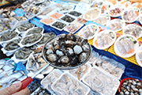

뉴스소식
관악소리 최신호 보기
본 콘텐츠의 사용 및 편집, 수정에 관한 사항은 각 담당 부서에 문의 바랍니다.
PDF 파일을 보기 위해서는 adobe acrobat reader가 설치되어 있어야 합니다.
 기획특집
기획특집

기획특집
작지만 알찬 시장 인헌시장
전통시장은 그 지역사람들의 삶을 고스란히 드러내고 시장마다 다른 특색을 가지고 있다. 인헌시장은 1980년대 형성되어, 2008년 인헌시장(구 원당시장)으로 정식명칭을 바꾼 전통시장이다.
- 담당부서
- 홍보전산과
- 연락처
- 02-879-5262
페이지 만족도 조사
Q. 현재 페이지에서 제공되는 서비스에 대하여 만족하십니까?